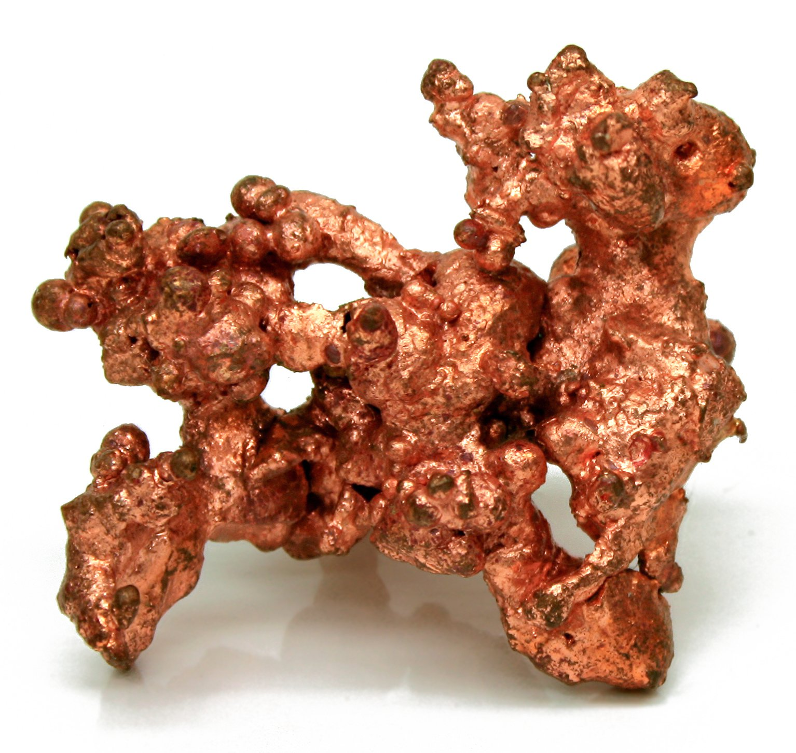
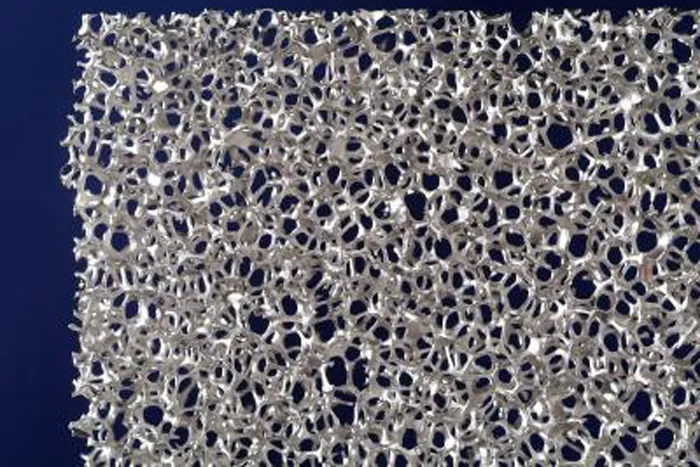

Palladium was discovered in 1802 by chemist William Hyde Wollaston who, at the time, was experimenting with purifying platinum. He accidentally discovered palladium by dissolving platinum in a mixture of nitric acid and hydrochloric acid (called “agua regia”) and examining the residue.
Copper was first used by man over 10,000 years ago. A copper pendant discovered in what is now northern Iraq has been dated about 8700 B.C. For nearly five millennia copper was the only metal known to man, and thus had all the metal applications.
In 1795, the German scientist Martin Heinrich Klaproth of Berlin investigated a red ore known as Schörl from Hungary. This is a form of rutile (TiO2) and Klaproth realised it was the oxide of a previously unknown element which he named titanium. When he was told of Gregor’s discovery he investigated menachanite and confirmed it too contained titanium.
It was not until 1910 that M. A. Hunter, working for General Electric in the USA, made pure titanium metal by heating titanium tetrachloride and sodium metal.